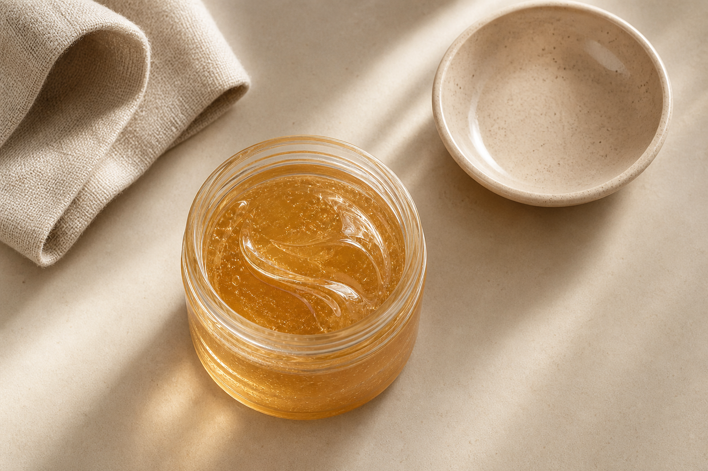
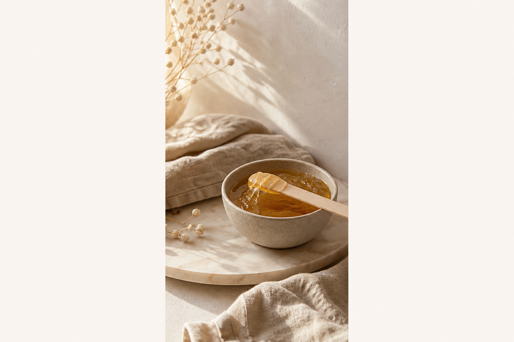

Depilacja pastą cukrową
Delikatniejsza alternatywa dla wosku — świetna do pach, nóg i bikini, także przy skórze wrażliwej.
Orientacyjne ceny — depilacja cukrowaBeauty studio · Szczecin-Zdroje
Gładka skóra, naturalny glow i wizyta bez presji — z troską o Twój komfort w gabinecie na Zdrojach.
W SłodkoTu skupiamy się na dwóch rzeczach: depilacji cukrowej i spray tanu. Czystość, dyskrecja i tempo dopasowane do Ciebie — bez „fabrycznego” pośpiechu.
Tu jesteś ważna
Wybierz wizytę, po której czujesz się lekko, gładko i pewniej.
Delikatniejsza alternatywa dla wosku — świetna do pach, nóg i bikini, także przy skórze wrażliwej.
Orientacyjne ceny — depilacja cukrowaNaturalny efekt opalenizny bez UV — na ślub, sesję, wyjazd albo wtedy, gdy chcesz wyglądać świeżo bez słońca.
Sprawdź spray tan — cenyChcesz dobrać strefy albo zapytać o wolny termin? Napisz — odpowiemy krótko i konkretnie.
Zapytaj o wolny terminKrótka wiadomość wystarczy — ustalimy termin i zakres.
W razie potrzeby doradzimy przy wyborze stref i przygotowaniu.
Bez zbędnych formalności — skupiamy się na efekcie i komforcie.
Pasta obejmuje głównie włos, nie „przykleja” się do skóry jak wosk — często mniej podrażnień, komfortowa opcja do bikini i przy wrażliwej skórze.
DHA nadaje naturalny, równy odcień bez solarium. Dobieramy ton do Twojej karnacji — efekt świeżej skóry bez przesady.
Krótkie głosy po wizytach — bez przesady.
Ciepłe światło, czyste wnętrze — tak, żebyś mogła naprawdę zwolnić.

Len, ceramika, miękkie światło — spójny, ciepły klimat.
Studio jest na Zdrojach w Szczecinie — wygodnie dojedziesz z prawobrzeża, Gryfina, Chojny, Widuchowej, Banie i Starego Czarnowa. Po rezerwacji wysyłamy dokładne wskazówki dojazdu.

Krótkie wskazówki, żeby zabieg był dla Ciebie jak najwygodniejszy.
WhatsApp albo telefon — bez długiego formularza.
Studio na Zdrojach — Szczecin, woj. zachodniopomorskie
Pełny adres na Zdrojach i wskazówki dojazdu wysyłamy po rezerwacji.
Mapa okolicy wczytuje się tutaj po wybraniu Akceptuję w informacji o plikach cookies (wtedy z serwerem OpenStreetMap łączy się przeglądarka — jak przy zwykłym wejściu na mapę). Otwórz mapę w nowej karcie.
Pierwsza wiadomość wystarczy, by dobrać termin. Odpowiadamy na WhatsApp i telefon — bez długiego formularza.